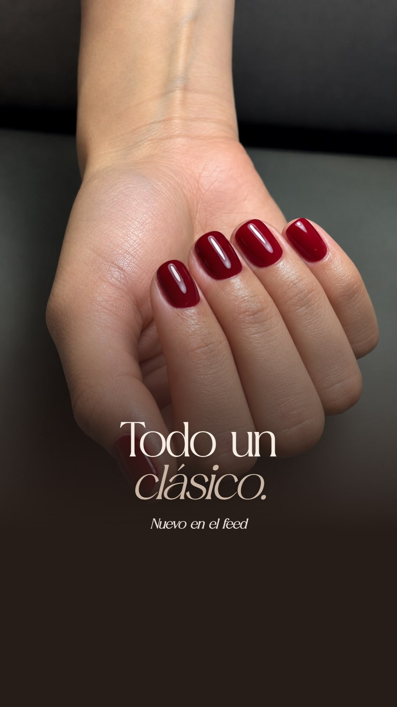
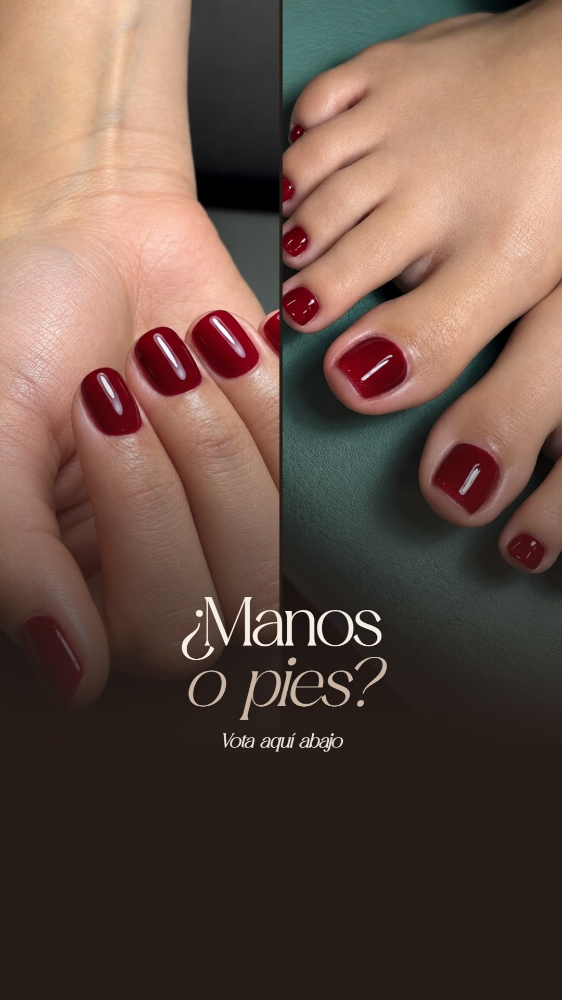

Nº 13 · Carrusel · 5 + 2 historias
Todo un clásico
Sáb 24 oct11:00 a. m.
La idea
El rojo y el burdeos, en manos y pies, como lo que son: un clásico que nunca pasa de moda. Las fotos mandan; cada diseño lleva solo un título y una línea.
Carrusel · desliza


Historias




Caption
Todo un clásico. ❤️
Rojo y burdeos, en manos y pies. De los que nunca pasan de moda.
¿Manos, pies o las dos? Cuéntanos.
Reserva tu momento por WhatsApp: 311 566 2051
CC Montaña Plaza, local 4 · Cajicá
#AlmaHouse #TuMomento #UñasRojas #Cajicá #NailBarCajicá #PedicureCajicá
Para las historias
- Historia 1: sticker de mención al post o "Nuevo post".
- Historia 2: sticker de encuesta "¿Manos o pies?" debajo del texto.
Notas
- Publicar el carrusel en el feed de Instagram (no solo en Facebook).